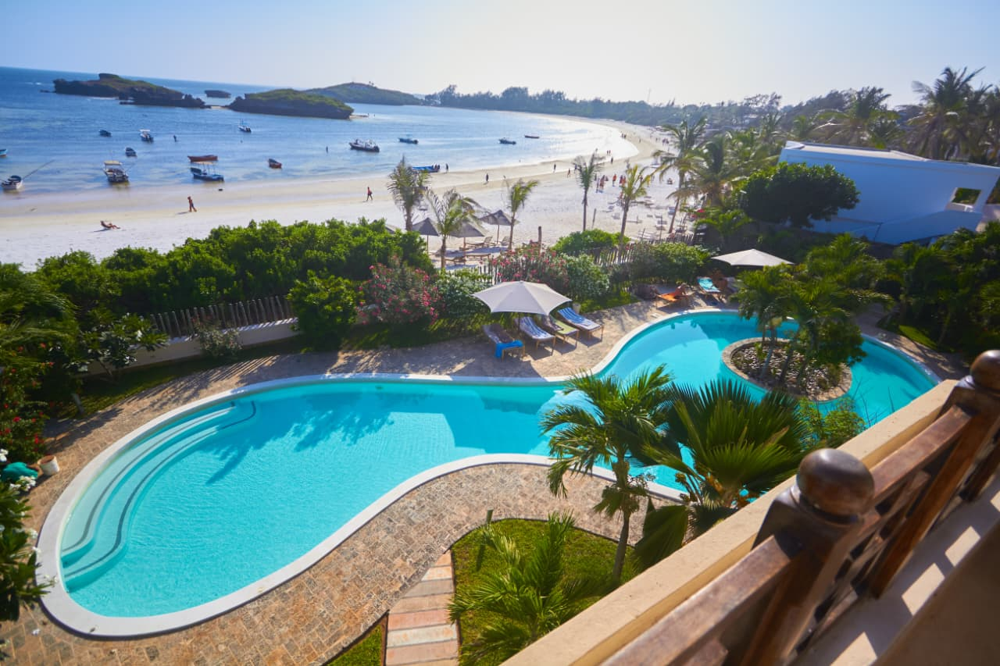
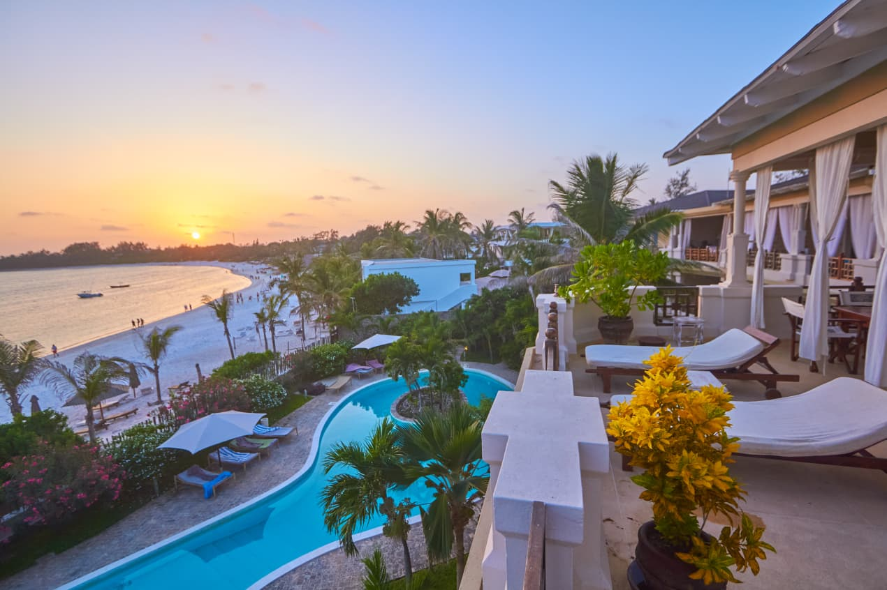
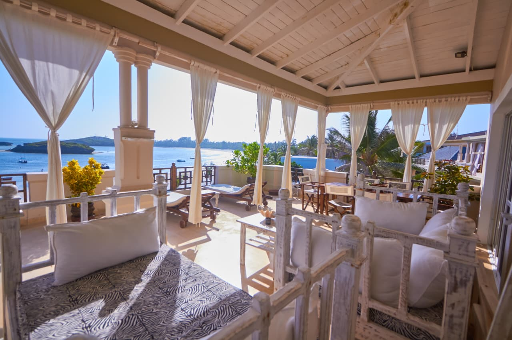
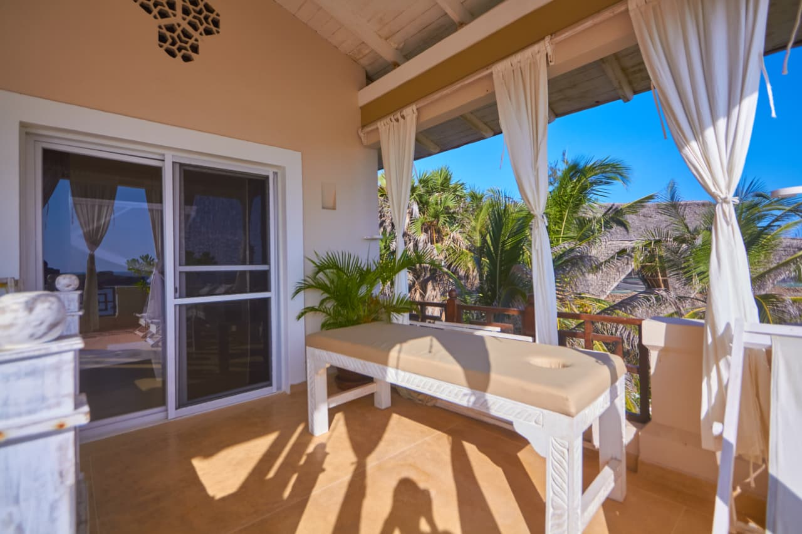
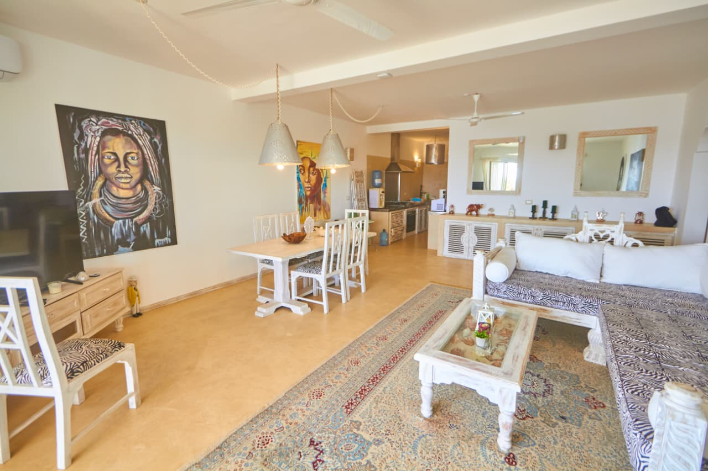
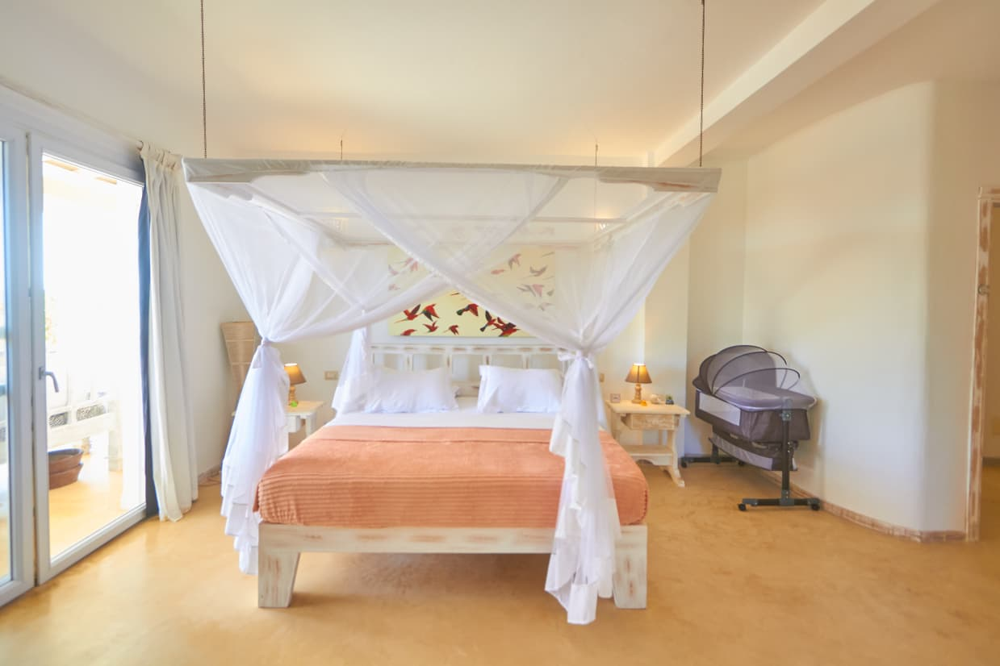
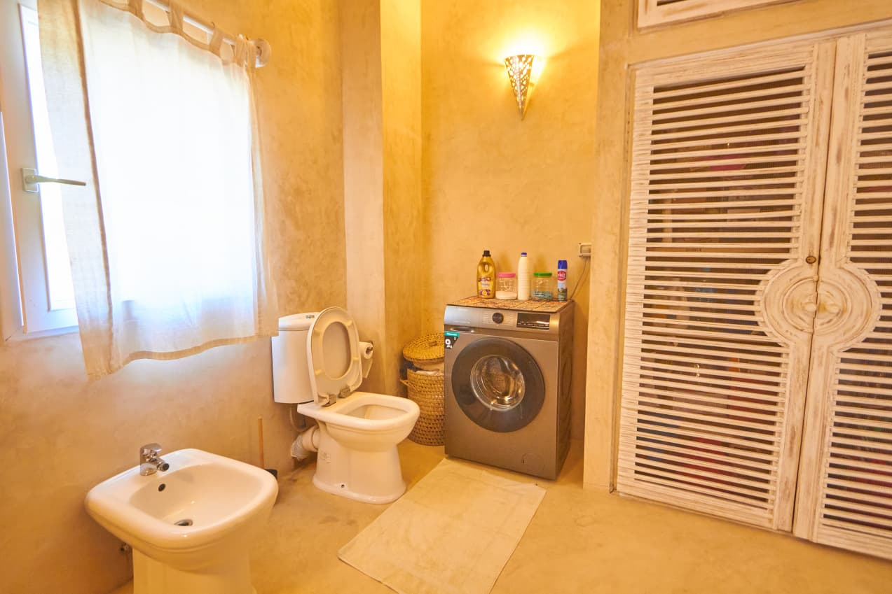

Best View
Watamu · KenyaTwo hundred square metres above the Indian Ocean, seventy of them given over to a covered terrace. The apartment is named after what it looks at, and for once the name is doing honest work.
- 200 m² apartment
- 70 m² covered terrace
- 2 bedrooms
- Watamu Kenyan coast

The view
The apartment faces the bay head on. Below it sits the pool, then a band of planting, then the beach. Coral rock breaks the surface where the bay opens out, and boats sit in the gaps between the rocks.
This is not a sea view in the sense of the sea being visible somewhere. The sea is the whole picture.
The orientation also means the sunset arrives on the terrace. On an east-facing coast that is rare enough to be worth saying out loud.

The terrace
Seventy square metres of it, under a timber roof left open to the ridge. Carved daybeds, loungers, a dining table, and white curtains on every side that can be drawn as the sun comes round the columns.
In this climate a terrace of that size is not an extra room. It is the room. Everything behind it is where you sleep and where you get out of the heat, and it is plainer and calmer for exactly that reason.


Inside
Living room, dining room and kitchen share a single open space, with high ceilings, fans overhead and air conditioning in the bedrooms. The furniture is white carved hardwood in the coastal Swahili style, set against African paintings and woven rugs.
Two bedrooms. The main one has a four-poster under a mosquito net and its own door onto the terrace. A cot stands in the corner in the photographs, so a small child is accounted for.

What to know
Four things the photographs show that a listing would not spell out.
The pool is shared
It belongs to the complex, not to the apartment. Loungers and parasols run the length of it, so expect other people in the water below the terrace.
The bathroom is also the laundry
The washing machine stands in there, beside the basket and the louvered cupboard. Genuinely useful on a long stay, worth knowing before a short one.
Traditional, not hotel-minimal
Carved wood, plastered walls in earth tones, rugs and paintings. If the look you want is a white box with recessed lighting, this is the other thing entirely.
The day happens outside
The terrace carries the place. Anyone planning to spend their days indoors will get less out of it than someone who sits out from first light to dark.

The practical part
Air conditioning in the bedrooms, ceiling fans over the living space. Mosquito nets above the beds, which on this coast is equipment rather than decoration.
Plastered walls in warm earth tones, and smooth floors that stay cool underfoot. Those are the details that do not photograph, and that decide how the middle of the day actually feels.
This page was put together from the owner’s photographs and the details they supplied, not from a stay. Rates, dates and terms are the owner’s to confirm.